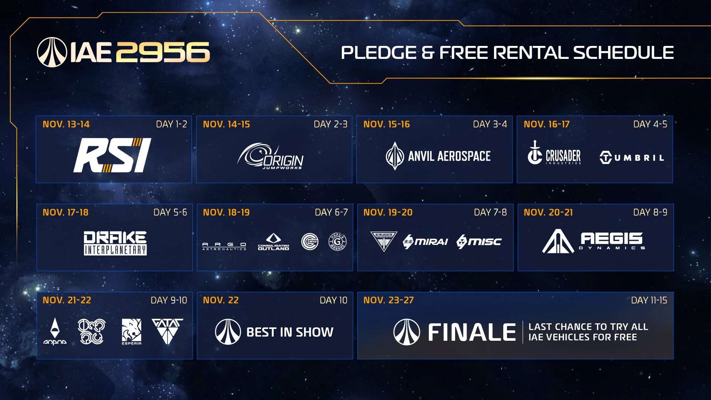

📰 官方最新消息展望台
CIG 官方公布的活動、展覽與重大消息。上方是自動抓取的官方公告，下方是站長整理的重點。
📡 官方公告（自動更新）
即將開始官方公告：IAE 2956 - Save the Date ↗
🚀 IAE 2956 星際航太展
IAE（Intergalactic Aerospace Expo）是星際公民每年最大的船展。今年的展期是 11/13～11/27，共 15 天，地點在 microTech 的 New Babbage，Stanton 的科技重鎮、白雪覆蓋的城市。
🎉 整個展期都可以免費玩星際公民！沒買遊戲的朋友也能進來，很適合拉朋友入坑。
🎟️ 每位參展者都可以
- 免費試開 200 多台飛船與地面載具：在展場的 kiosk 終端機挑選
- 看各大廠商最新的飛船
- 拿到 IAE 限定護甲、載具塗裝與遊戲內物品
各家廠商會輪流展出自己的船，展出期間也會有該廠商的船艦販售。完整的可試開船單官方之後才會公布。

📅 每日展出廠商
| 日期 | 天數 | 展出廠商 |
|---|---|---|
| 11/13–14 | Day 1–2 | RSI |
| 11/14–15 | Day 2–3 | Origin Jumpworks |
| 11/15–16 | Day 3–4 | Anvil Aerospace |
| 11/16–17 | Day 4–5 | Crusader Industries、Tumbril |
| 11/17–18 | Day 5–6 | Drake Interplanetary |
| 11/18–19 | Day 6–7 | ARGO Astronautics、Consolidated Outland、Greycat Industrial、Greys Market |
| 11/19–20 | Day 7–8 | Kruger Intergalactic、Mirai、MISC |
| 11/20–21 | Day 8–9 | Aegis Dynamics |
| 11/21–22 | Day 9–10 | Aopoa、Banu、Esperia、Gatac（外星廠商） |
| 11/22 | Day 10 | 🏆 Best in Show（年度最佳船艦展示） |
| 11/23–27 | Day 11–15 | 🎉 Finale 閉幕週：最後機會，所有 IAE 展出的船都可以免費試飛 |
- 每個廠商的展期是 2 天，前後廠商會重疊一天。
- 官方圖上的日期是美國時間，台灣時間會晚大約半天到一天。
- 錯過想試的船也沒關係，11/23～27 的閉幕週全部船都能再租一次。
- 🌌 RSI 日（11/13–14）值得關注開發中的大船 RSI Galaxy，官方剛釋出 Behind the Ships 影片，介紹請看 RSI Galaxy；今年所有新船整理在 新船介紹。
- 想試 Intersec 推薦的戰鬥船：Perseus、Meteor 在 RSI 日、M80 在 Origin 日、Guardian／Guardian MX 在 Mirai 日。詳細請看 Intersec 聲望攻略。
🔒 限量船開賣時間（台灣時間）
今年有幾艘限量船，每個帳號限購一艘。為了照顧各時區的玩家，每艘船會分 6 波開賣。換成台灣時間後，6 波剛好都在同一天，從凌晨 00:00 開始，每 4 小時一波。
| 台灣開賣日 | IAE 天數 | 限量船 |
|---|---|---|
| 11/15（日） | Day 2 | Origin 890 Jump |
| 11/18（三） | Day 5 | Drake Kraken、Drake Kraken Privateer |
| 11/19（四） | Day 6 | Consolidated Outland Pioneer |
| 11/21（六） | Day 8 | Aegis Idris-P、Aegis Javelin |
| 波次 | 台灣時間 | 官方時間（UTC） |
|---|---|---|
| 第 1 波 | 00:00（凌晨） | 前一天 16:00 |
| 第 2 波 | 04:00（凌晨） | 前一天 20:00 |
| 第 3 波 | 08:00（早上） | 00:00 |
| 第 4 波 | 12:00（中午） | 04:00 |
| 第 5 波 | 16:00（下午） | 08:00 |
| 第 6 波 | 20:00（晚上） | 12:00 |
- 例如 890 Jump：第 1 波是 11/15 凌晨 00:00，最後一波是 11/15 晚上 20:00。
- 不想熬夜的話，搶標黃色的 08:00、12:00、16:00、20:00 這幾波就好。
- 官方公告上寫的是 11/14、11/17、11/18、11/20（UTC），換成台灣時間都要往後一天。
🔭 之後的消息
官方有新的活動或重大公告，會陸續整理到這一頁。改版與 PTU 測試內容請看：
📚 資料來源
整理自 RSI 官方公告 IAE 2956 - Save the Date，時間表為官方公布圖片。遊戲畫面與素材版權歸 Cloud Imperium Games 所有。